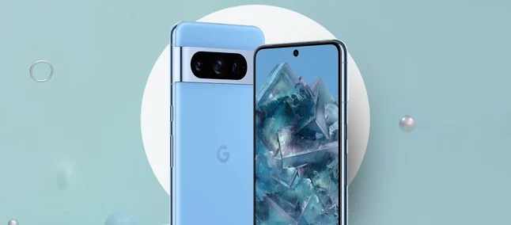
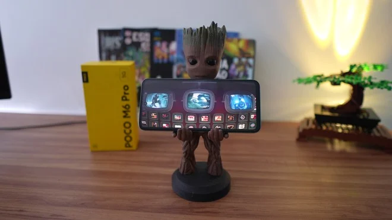

Google libera atualização de segurança de junho de 2024 com várias correções para a linha Pixel
postado 08 de junho 2024 O Google está liberando, nesta terça-feira (11), uma nova atualização para os usuários de seus smartphones que inclui o patch de segurança de junho de 2024, trazendo as correções mais recentes aos dispositivos. São elegíveis todos os modelos lançados a partir do Pixel 5a 5G, incluindo o Pixel Fold e Pixel Tablet.
Leia maisMoto G34 vs POCO M6 Pro: qual é o melhor celular básico com 5G? | Comparativo
postado 07 de junho 2024 O Moto G34 e o POCO M6 Pro 5G têm um foco no mesmo tipo de consumidor. Estamos falando em quem procura por um aparelho acessível no preço, mas compatível com a rede móvel mais veloz. Entre estas duas opções do segmento de entrada, é a Motorola ou a Xiaomi que possui o melhor smartphone com suporte a 5G? Você confere a resposta em detalhes agora no TecBlog.
Leia mais